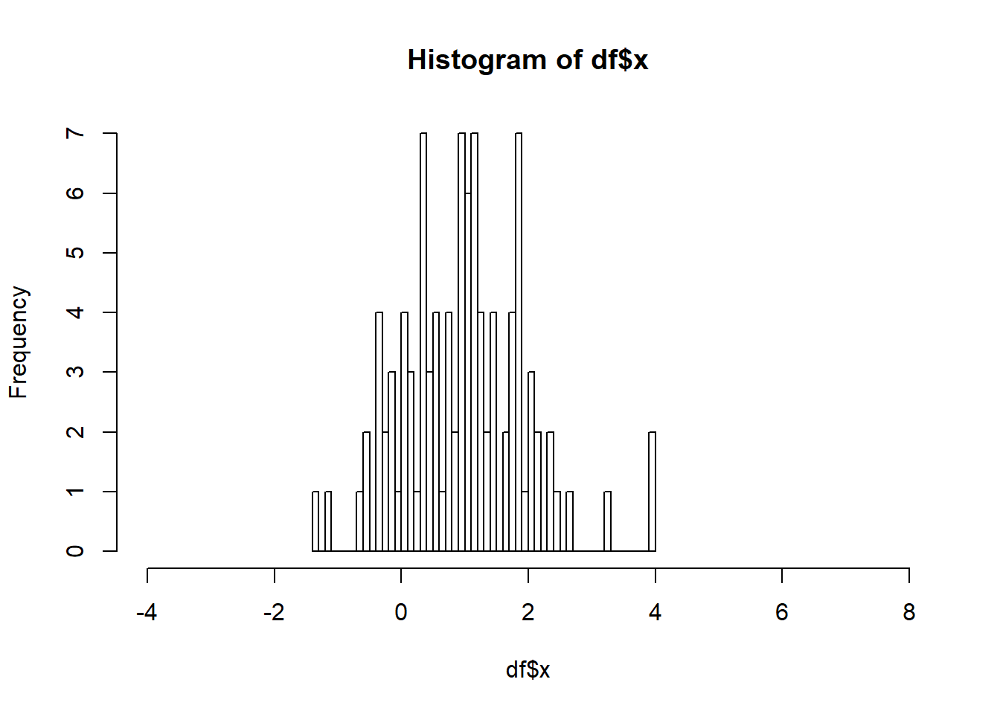
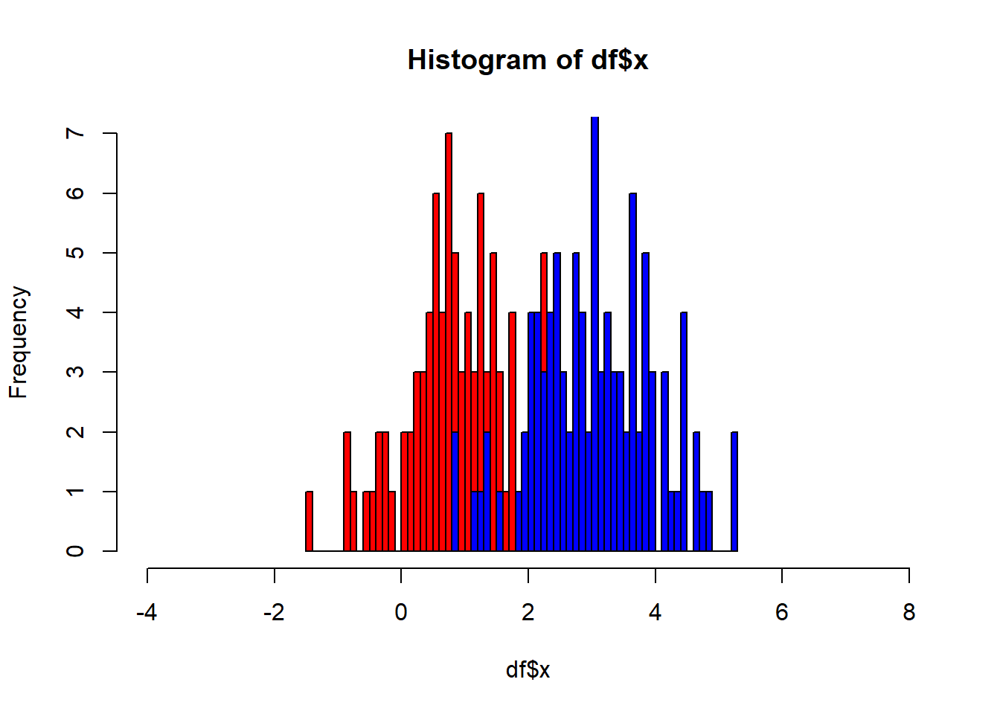
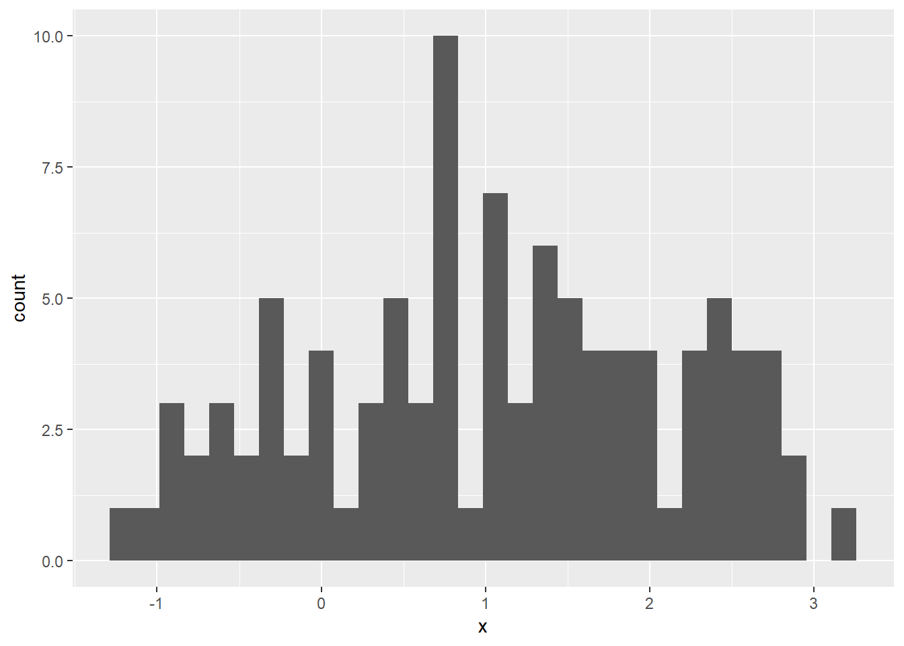
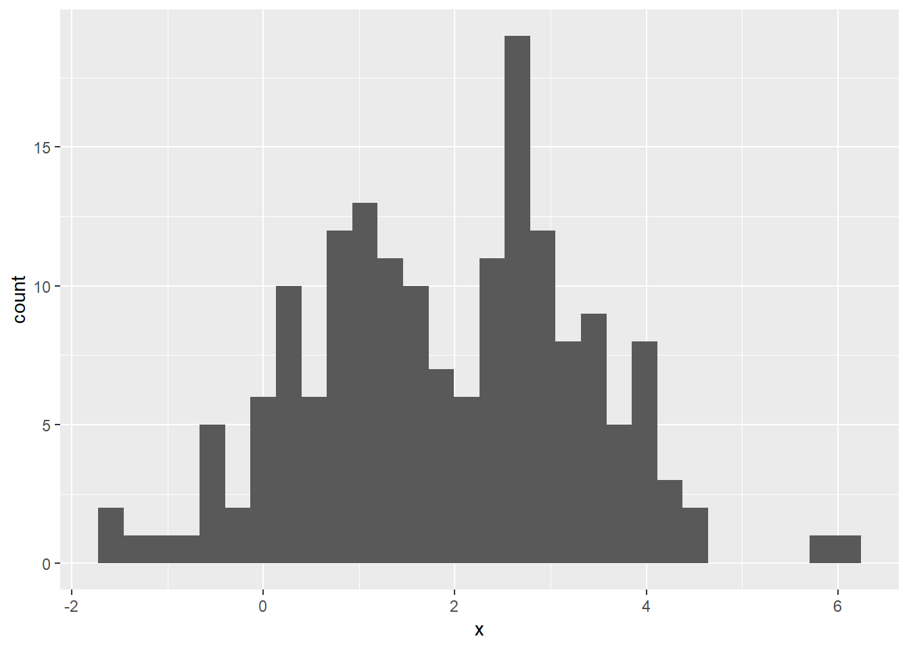
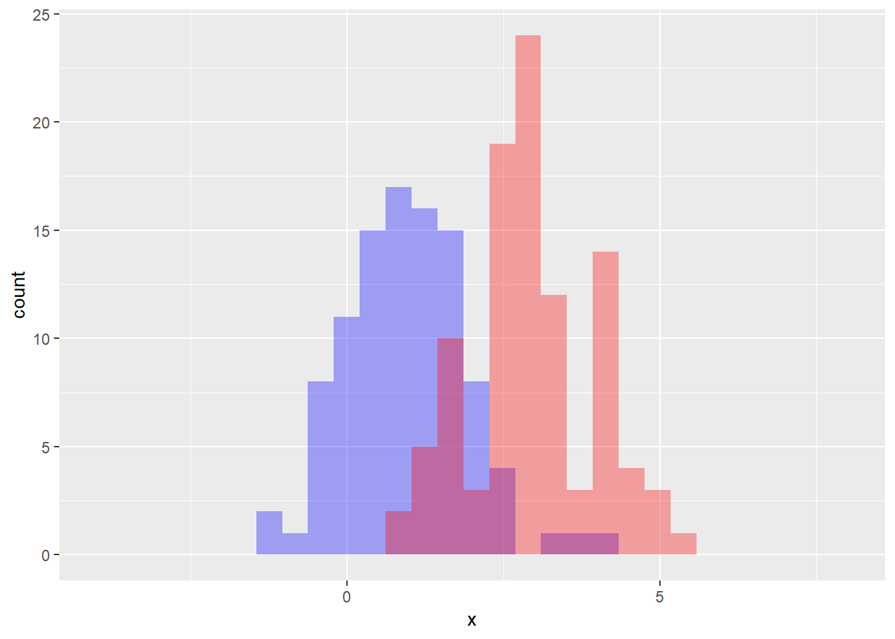
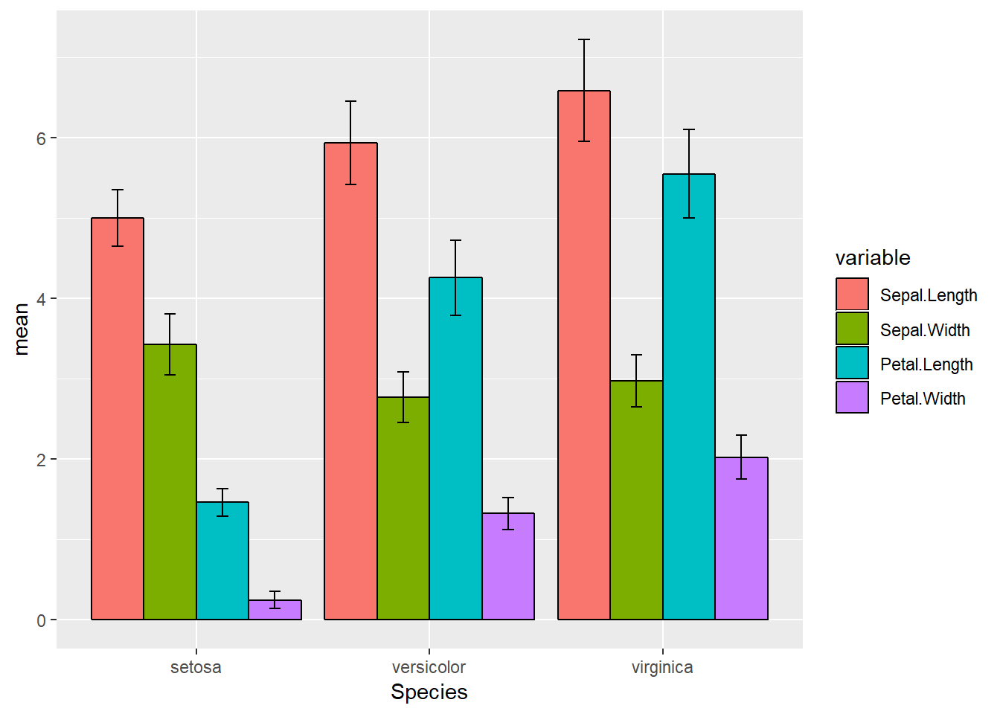

9 Lecture 08 - ggplot / data transformation using dplyr
4월 24일 수요일 강의는 강사 사정으로 휴강하였으며 5월 1일은 근로자의날로 5월 3일 보강을 진행하였습니다.
강의 노트 Lecture note
이번 시간에는 ggplot을 이용한 error bar를 구현하기 위하여 dplyr의 mutate, select, join 함수들 그리고 reshape2 패키지의 melt 함수에대하여 알아보기로 하겠습니다. 수업 전 다음 패키지 설치가 필요합니다. 이미 설치되어 있다면 생략할 수 있습니다. 인터넷 연결된 상태에서 Rstudio 콘솔창에 다음을 입력하세요.
install.packages("ggplot2")
install.packages("dplyr")
install.packages("reshape2")
library(ggplot2)
library(dplyr)
library(reshape2)9.1 dplyr mutate / select 함수
dplyr패키지의 mutate 함수는 데이터프레임의 특정 변수 값들을 변환 후 새로운 변수를 만들어 추가해 주는 기능을 합니다. 다음 df 데이터는 x, y 두 변수로 이루어져 있으며 각 변수를 표준화한 변수 std_x와 std_y를 생성하고 이 변수들로 새로운 데이터프레임 std_df를 만들어 봅니다.
df <- data.frame(x=rnorm(100)+1, y=rnorm(100)+3)
std_x <- (df$x-mean(df$x))/sd(df$x)
std_y <- (df$y-mean(df$y))/sd(df$y)
std_df <- data.frame(std_x, std_y)
head(std_df)## std_x std_y
## 1 1.456066168 1.85618862
## 2 -0.804820806 1.94713818
## 3 -0.005563097 0.75621330
## 4 -1.152328978 0.09646015
## 5 -0.774339310 0.17864845
## 6 -1.625296395 -1.06591784위와같은 코드를 사용해도 되겠지만 ‘’’df$’’’ 의 반복적인 사용이 불편합니다. data.frame 만들어주는 라인도 std_x와 std_y 같은 새로운 변수 오브젝트를 생성한 후 std_df를 만들어내므로 메모리적으로도 낭비가 있습니다. 이제 위 코드를 mutate 함수를 사용해서 만들어 봅니다.
tmpdf <- mutate(df, std_x=(x-mean(x))/sd(x), std_y=(y-mean(y))/sd(y))
head(tmpdf)## x y std_x std_y
## 1 2.31334622 4.958503 1.456066168 1.85618862
## 2 0.25882625 5.050301 -0.804820806 1.94713818
## 3 0.98513010 3.848268 -0.005563097 0.75621330
## 4 -0.05696242 3.182360 -1.152328978 0.09646015
## 5 0.28652548 3.265315 -0.774339310 0.17864845
## 6 -0.48675879 2.009140 -1.625296395 -1.06591784위와 같이 사용하면 std_x나 std_y 변수를 따로 만들지도 않고 data.frame으로 따로 묶지 않아도 새로운 변수를 추가해 줍니다. 그러나 우리가 목적한 std_df는 std_x와 std_y만을 필요로 하므로 아래와 같이 select 함수를 연동하면 됩니다.
tmpdf <- mutate(df, std_x=(x-mean(x))/sd(x), std_y=(y-mean(y))/sd(y))
std_df <- select(tmpdf, std_x, std_y)
head(std_df)## std_x std_y
## 1 1.456066168 1.85618862
## 2 -0.804820806 1.94713818
## 3 -0.005563097 0.75621330
## 4 -1.152328978 0.09646015
## 5 -0.774339310 0.17864845
## 6 -1.625296395 -1.06591784위와 같은 코드가 일반적인 함수를 사용하는 방법입니다. 그런데 tmpdf라는 임의의 변수를 중간에 생성 후 std_df를 만드는 과정이 메모리 관리 측면에서는 비효율적입니다. 이 때 파이프오퍼레이터 %>%를 이용하면 tmpdf 없이 바로 std_df를 만들어 쓸 수 있습니다.
std_df <- df %>%
mutate(std_x=(x-mean(x))/sd(x), std_y=(y-mean(y))/sd(y)) %>%
select(std_x, std_y)
head(std_df)## std_x std_y
## 1 1.456066168 1.85618862
## 2 -0.804820806 1.94713818
## 3 -0.005563097 0.75621330
## 4 -1.152328978 0.09646015
## 5 -0.774339310 0.17864845
## 6 -1.625296395 -1.06591784참고로 R은 한 line 별로 명령을 실행하는 스크립트 언어 입니다. 그러나 %>%를 사용한 후 enter를 눌러 라인을 바꾸어도 두 라인으로 인식하지 않고 여전히 한 라인이 계속 이어지는 것으로 인식하여 라인을 실행하지 않습니다. 이는 괄호(를 열어준 후 )로 닫기 전까지는 계속 한 라인으로 인식하는 것과 같습니다. R에서는 한 라인의 명령이 길어질 경우 위와 같은 조건에서 라인을 바꾸어 가독성을 높여주는 코드를 작성합니다. 실행하는 중으로 mutate와 select의 자세한 내용은 help 페이지를 참고하세요.
9.2 ggplot2를 이용한 두 개의 bar graph 겹쳐 그리기
df 데이터프레임에는 x와 y 두 변수가 있습니다. x 하나의 변수에 대해 barplot을 그려보면 다음과 같습니다.
hist(df$x, br=50, xlim=c(-4,8))
여기에 두 번째 변수 의 histogram 을 겹쳐서 그리기 위해서는 다음과 같이 add=T 파라메터를 활용하면 되겠습니다. col 파라메터로 color를 설정해줄 수 있습니다.
hist(df$x, br=50, col="red", xlim=c(-4,8))
hist(df$y, br=50, col="blue", xlim=c(-4,8), add=T)
이제 ggplot을 이용하여 그래프를 그려보겠습니다. 먼저 df의 x에 대한 bar graph를 그리면 다음과 같습니다. df의 x를 x축에 mapping 하고 (aes) stat은 연속형 값을 가지므로 bin으로 합니다.
ggplot(df, aes(x=x)) +
geom_bar(stat="bin")## `stat_bin()` using `bins = 30`. Pick better value with `binwidth`.
여기에 y의 historam을 추가하려면 어떻게 할까요? ggplot에서 aes는 데이터와 x, y축 mapping을 설정해 주는 역할을 합니다. 그런데 aes를 geom_xxx 에도 사용할 수 있습니다. ggplot에서 사용된 aes는 그래프 전체에 대한 mapping을 수행하고 geom_xxx에서 aes를 사용할 경우 해당 geometry에 대해서만 mapping 을 수행하게 됩니다. 어렵게 들리실 수 있지만 아래 예제로 이해해 보도록 하겠습니다.
ggplot(df) +
geom_bar(stat="bin", aes(x=x))+
geom_bar(stat="bin", aes(x=y))## `stat_bin()` using `bins = 30`. Pick better value with `binwidth`.
## `stat_bin()` using `bins = 30`. Pick better value with `binwidth`.
즉, x와 y 각각에 대해서 geom_bar를 그리게 된 결과입니다. 다만 이 때는 y축에 그려지는 df$x, df$y가 같은 stat을 사용해야합니다. 또한 x축에 그려질 데이터는 df$x, df$y는 같은 그룹이어야 합니다 (이 경우에 대한 예제는 없습니다).
위 예제의 bar에 칠해지는 색을 다르게 표현해 보도록 하겠습니다. 이번에는 투명한 색으로 칠하여 겹치는 부분의 bar까지 확인할 수 있도록 합니다.
ggplot(df)+
geom_bar(aes(x=x), stat="bin", fill="#0000ff55") +
geom_bar(aes(x=y), stat="bin", fill="#ff000055") +
scale_x_continuous(limits=c(-4,8))## `stat_bin()` using `bins = 30`. Pick better value with `binwidth`.
## `stat_bin()` using `bins = 30`. Pick better value with `binwidth`.## Warning: Removed 2 rows containing missing values (geom_bar).
## Warning: Removed 2 rows containing missing values (geom_bar).
그러나 보통의 경우 ggplot을 이용하여 두 개 이상의 변수를 한 화면에 그릴때 위와같은 방법을 사용하는 것은 아닙니다. 자세한 내용은 수업시간에 설명드렸으며 간단히 x, y 변수로 구성된 df를 variable과 value로 구성된 데이터프레임으로 변형하여 사용합니다. 즉 다음과 같은 두 변수를 갖는 데이터프레임이 있다고 가정해 봅니다.
x <- c(1,3,5,7,9)
y <- c(2,4,6,8,10)
df <- data.frame(x, y)
df## x y
## 1 1 2
## 2 3 4
## 3 5 6
## 4 7 8
## 5 9 10이 데이터프레임을 다음과 같은 variables 와 values로 구성된 데이터프레임으로 변형할 수 있습니다.
variables <- c("x", "x", "x", "x", "x", "y", "y", "y", "y", "y")
values <- c(1,3,5,7,9,2,4,6,8,10)
df_melt <- data.frame(variables, values)
df_melt## variables values
## 1 x 1
## 2 x 3
## 3 x 5
## 4 x 7
## 5 x 9
## 6 y 2
## 7 y 4
## 8 y 6
## 9 y 8
## 10 y 10이러한 표현 형식은 z <- c(11,12,13,14,15) 변수가 추가되어도 여전히 variables와 values 두 변수만으로 표현할 수 있습니다.
variables <- c("x", "x", "x", "x", "x", "y", "y", "y", "y", "y", "z", "z", "z", "z", "z")
values <- c(1,3,5,7,9,2,4,6,8,10,11,12,13,14,15)
df_melt <- data.frame(variables, values)
df_melt## variables values
## 1 x 1
## 2 x 3
## 3 x 5
## 4 x 7
## 5 x 9
## 6 y 2
## 7 y 4
## 8 y 6
## 9 y 8
## 10 y 10
## 11 z 11
## 12 z 12
## 13 z 13
## 14 z 14
## 15 z 15이러한 형식의 표현법으로 ggplot을 이용하여 2차원 (x축, y축) 도표를 효율적으로 그릴 수 있습니다. 즉, geom_bar 각각에 aes를 사용하지 않고 ggplot의 aes에서 aes(x=values) 로 표현하고 geom_bar에서는 stat만을 명시하는 것 만으로 여러 변수의 값을 한 도표에 그릴수 있습니다.
ggplot(df_melt, aes(x=values, fill=variables))+
geom_bar(stat="bin") +
scale_x_continuous(limits=c(-2,20))## `stat_bin()` using `bins = 30`. Pick better value with `binwidth`.## Warning: Removed 6 rows containing missing values (geom_bar).
이러한 variables 와 values를 이용한 새로운 타입의 data.frame 표현형은 reshape2 패키지의 melt 함수를 이용해서 쉽게 전환할 수 있습니다. melt함수는 generic 함수로 입력 인자의 object type에 따라 다른 기능을 수행하며 입력 오브젝트가 data.frame 일 경우 id.vars, measure.vars, vriable.name 세 개의 중요한 파라메터가 있습니다. id.vars는 말 그대로 데이터의 ID (이름) 역할을 할 컬럼 (변수)를 지정해 줍니다. 아무것도 쓰지 않으면 nonmeasured 변수를 사용합니다. measure.vars에는 관측값을 갖는 변수를 지정합니다. 아무것도 쓰지 않으면 non id.vars가 아닌 모든 변수를 사용합니다. variable.name, value.name은 관측값으로 만든 새로운 변수의 이름들을 설정합니다. 아무것도 지정하지 않을 경우 자동으로 variable과 value로 됩니다. 아무것도 지정하지 않은 상태로 실행할 때 No id variables; using all as measure variables 와 같이 안내 메세지를 참고하시면 되겠습니다.
library(reshape2)## Warning: package 'reshape2' was built under R version 3.5.3df_melt2 <- melt(df)## No id variables; using all as measure variablesdf_melt2## variable value
## 1 x 1
## 2 x 3
## 3 x 5
## 4 x 7
## 5 x 9
## 6 y 2
## 7 y 4
## 8 y 6
## 9 y 8
## 10 y 109.3 dplyr 이용한 iris data 가공
errorbar를 그리기 위해서는 평균과 표준편차(또는 표준오차)를 계산해야 하며 iris data를 이용한 실습을 해보겠습니다. dplyr을 사용하지 않고 일반적으로 평균을 구하는 방법은 지난시간 수행해 보았습니다. dplyr의 group_by와 summarize 함수를 사용하고 파이프오퍼레이터를 사용하지 않은 경우 다음과 같습니다.
iris_grouped <- group_by(iris, Species)
iris_grouped_summary <- summarize(iris_grouped,
length_mean=mean(Sepal.Length),
length_sd=sd(Sepal.Length))앞서 파이프오퍼레이터를 사용하는 이유에 대한 간략한 설명을 한 바와 같이 아래와 같은 코드로 iris_grouped 라는 변수를 중간에 생성하지 않고 바로 원하는 각 그룹별 mean 과 sd 를 갖는 iris_grouped_summary 결과를 얻을 수 있습니다.
iris_grouped_summary <- iris %>%
group_by(Species) %>%
summarize(length_mean=mean(Sepal.Length),
length_sd=sd(Sepal.Length))
iris_grouped_summary## # A tibble: 3 x 3
## Species length_mean length_sd
## <fct> <dbl> <dbl>
## 1 setosa 5.01 0.352
## 2 versicolor 5.94 0.516
## 3 virginica 6.59 0.636이제 평균을 bar graph로 그려주면 됩니다. 그러나 문제는 위 평균값은 단지 sepal의 length만을 구한 코드이고 sepal의 width 뿐만 아니라 petal의 length와 width에 대한 평균과 표준편차를 모두 구해야 하는 문제가 남아 있습니다. 위 코드대로라면 summarize 함수에서 각각에 대한 mean과 sd를 수행해야 하지만 이는 각 컬럼 변수별로 mean 과 sd를 구하는 것과 같은 문제이므로 이를 위해서 dplyr에서는 summarize_all 이라는 함수를 제공하고 있습니다.
tmp_mean <- group_by(iris, Species) %>% summarise_all(mean)
tmp_mean## # A tibble: 3 x 5
## Species Sepal.Length Sepal.Width Petal.Length Petal.Width
## <fct> <dbl> <dbl> <dbl> <dbl>
## 1 setosa 5.01 3.43 1.46 0.246
## 2 versicolor 5.94 2.77 4.26 1.33
## 3 virginica 6.59 2.97 5.55 2.03그런데 ggplot으로 위 결과의 mean 값들을 보여주기 위해서는 앞서 설명한 것처럼 melt 함수를 이용해서 데이터를 변형해 줄 필요가 있습니다. 위 tmp_mean 변수를 별도 생성하지 않고 최종 목표하는 데이터를 바로 얻어내기 위해서 다음과 같이 melt 함수도 파이프오퍼레이터를 활용합니다.
iris_mean_melt <- group_by(iris, Species) %>% summarise_all(mean) %>% melt## Using Species as id variableshead(iris_mean_melt)## Species variable value
## 1 setosa Sepal.Length 5.006
## 2 versicolor Sepal.Length 5.936
## 3 virginica Sepal.Length 6.588
## 4 setosa Sepal.Width 3.428
## 5 versicolor Sepal.Width 2.770
## 6 virginica Sepal.Width 2.974이제 위와 같이 관측값들은 variable, value 두 종류의 변수로 요약되며 value는 실제 값이고 variable은 각 값의 의미 즉, sepal, petal의 length와 width를 명시하는 값을 가지게 됩니다. 그 외 변수인 Species가 id로 되어 있습니다.
9.4 ggplot을 이용한 iris data 평균 값 및 에러 비교 그래프 그리기
위에서 구한 각 그룹별 평균은 ggplot을 이용하여 다음과 같이 그릴 수 있습니다. x 축에는 species를 그리고 y축 값은 value를 나타내도록 그립니다. 또한 각 bar의 색은 variable에 따라서 다르게 그리고 있습니다.
ggplot(iris_mean_melt, aes(x=Species, y=value, fill=variable)) +
geom_bar(stat="identity", position="dodge")
이제 에러바를 그리기 위해서 표준편차를 구해봅니다. 표준오차를 에러로 표시하는 것이 신뢰도 검증 측면에서 좋지만 일반적으로 표준편차를 사용하기도 합니다. 표준편차는 앞서 평균을 구하는 방법과 동일한 방법으로 간단히 구할 수 있습니다.
iris_sd_melt <- group_by(iris, Species) %>% summarise_all(sd) %>% melt## Using Species as id variableshead(iris_sd_melt)## Species variable value
## 1 setosa Sepal.Length 0.3524897
## 2 versicolor Sepal.Length 0.5161711
## 3 virginica Sepal.Length 0.6358796
## 4 setosa Sepal.Width 0.3790644
## 5 versicolor Sepal.Width 0.3137983
## 6 virginica Sepal.Width 0.3224966이제 문제는 앞서 iris_mean_melt 와 iris_sd_melt를 합해서 하나의 data.frame으로 만들어야 이를 ggplot에서 받아 평균과 표준편차 값을 그래프에 표시할 수 있다는 것 입니다. 이 때 사용하는 함수가 dplyr 패키지의 join 입니다. 두 데이터 테이블을 merge할때 고려해야할 사항 중 하나가 같은 id를 가진 row끼리 붙여줘야 한다는 것 입니다. 즉 예를 들어 철수, 영희 학생의 키와 몸무게를 따로따로 측정한 후 두 데이터를 합할 때 철수의 키와 영희의 몸무게 값이 같은 row에 오지 않고 몸무게와 키 값이 각각 측정한 사람의 id를 갖는 row에 와야 한다는 것 입니다. join 함수는 떨어진 두 data.frame의 각 id를 자동으로 비교하여 같은 id를 갖는 값끼리 옆으로 붙여줍니다. 자세한 내용은 join의 help 페이지를 참고하시면 좋겠습니다. 본 강의에서는 inner_join을 사용합니다.
tmp1 <- group_by(iris, Species) %>% summarise_all(mean) %>% melt(value.name=c("mean"))## Using Species as id variablestmp2 <- group_by(iris, Species) %>% summarise_all(sd) %>% melt(value.name = c("sd"))## Using Species as id variablesiris_melt <- inner_join(tmp1, tmp2)## Joining, by = c("Species", "variable")head(iris_melt)## Species variable mean sd
## 1 setosa Sepal.Length 5.006 0.3524897
## 2 versicolor Sepal.Length 5.936 0.5161711
## 3 virginica Sepal.Length 6.588 0.6358796
## 4 setosa Sepal.Width 3.428 0.3790644
## 5 versicolor Sepal.Width 2.770 0.3137983
## 6 virginica Sepal.Width 2.974 0.3224966참고로 melt 함수에서 value.name을 지정해 주는 이유는 이 지정 없이 melt 함수를 사용하게 되면 한 쪽 데이터의 평균과 다른 한 쪽 데이터의 표준편차가 모두 같은 이름 value로 저장되어 두 데이터를 합할 수 없기 때문입니다.
이제 아래와 같이 ggplot을 이용하여 error bar를 그려줍니다. ggplot2에서는 geom_errorbar라는 함수를 제공하여 원하는 작업을 쉽게 수행할 수 있습니다.
ggplot(iris_melt, aes(x=Species, y=mean, fill=variable)) +
geom_bar(stat="identity", position="dodge") +
geom_errorbar(aes(min=mean-sd, max=mean+sd),
position="dodge")
각 errorbar의 길이를 적당히 조절하기 위해 width 옵션을 사용하고 그에 따라 변하는 위치도 조절하기 위해서 position_dodge를 사용합니다.
ggplot(iris_melt, aes(x=Species, y=mean, fill=variable)) +
geom_bar(stat="identity", position="dodge", color="black") +
geom_errorbar(aes(ymin=mean-sd, ymax=mean+sd), width=.2, position=position_dodge(0.9)) 
마지막으로 ggplot은 + 오퍼레이터로 레이어를 추가하면서 그래프를 그릴 수 있고 이를 특정 변수에 저장한 후 사용할 수도 있습니다. 위 그래프를 아래와 같은 방식으로 코딩해도 같은 결과를 얻을 수 있습니다.
p1 <- ggplot(iris_melt, aes(x=Species, y=mean, fill=variable)) +
geom_bar(stat="identity", position="dodge", color="black")
p1 <- p1 + geom_errorbar(aes(ymin=mean-sd, ymax=mean+sd), width=.2, position=position_dodge(0.9))
p1
다음 시간에는 그래프의 detial을 조정하는 scale과 theme 옵션을 추가로 알아보고 96well 데이터에 대해서도 errorbar 를 추가해 보도록 하겠습니다.